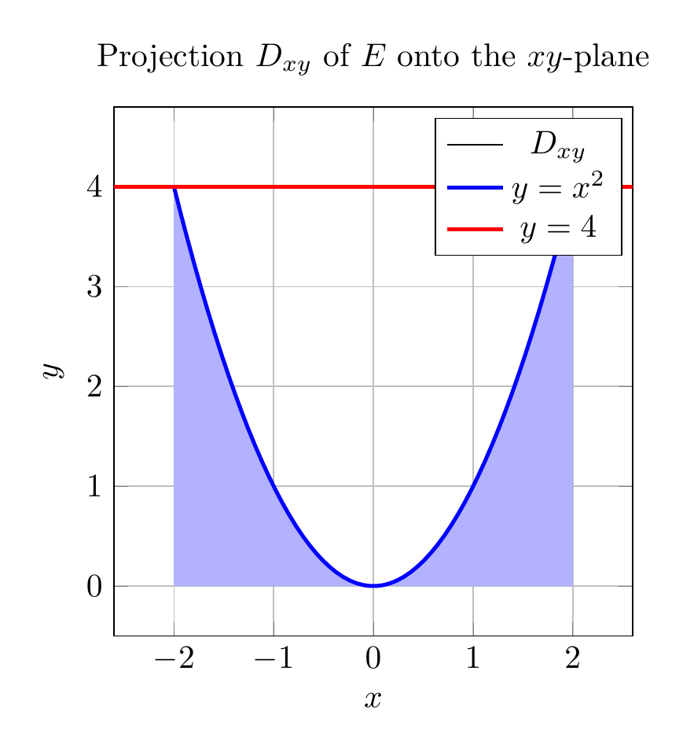

Please solve the problem in the following image.
(Image `20260928_232801_686208_utc_0800_0.png`. Alt text: Image: human_20260928_232801_686208_utc_0800)
20260928_232801_686208_utc_0800_0.png
End of problem
Answer
# Setting Up the Solid $E$
We need to express the integral $\iiint_E f(x,y,z)\,dV$ as an iterated integral in all **six** possible orders, where $E$ is bounded by the surfaces:
$$
y = x^2 \quad (\text{parabolic cylinder}), \qquad z = 0 \quad (xy\text{-plane}), \qquad y + 2z = 4 \quad (\text{plane}),
$$
**Describing $E$:** Since $E$ lies above $z=0$ and inside the parabolic cylinder, we can write
$$
E = \Big\{(x,y,z) : x^2 \le y \le 4 - 2z,\; z \ge 0 \Big\}.
$$
- **$xy$-shadow ($z=0$):** $E$ meets the plane $z=0$ where $x^2 \le y \le 4$, so the projection $D_{xy}$ is the region bounded by $y = x^2$ below and $y = 4$ above. The parabola meets $y=4$ at $x = \pm 2$.
- **$xz$-shadow ($y=0$):** here $0 \le y$ forces $x^2 \le 4 - 2z$, i.e., $x^2 \le 4-2z$ with $0 \le z \le 2$.
- **$yz$-shadow ($x=0$):** $0 \le y \le 4 - 2z$, a triangle $0 \le z \le 2$, $0 \le y \le 4-2z$.
Below: the solid $E$ (left) and its "shadow" $D_{xy}$ on the $xy$-plane (right).
---
\documentclass[border=10pt]{standalone}
\usepackage{pgfplots}
\pgfplotsset{compat=1.18}
\begin{document}
\begin{tikzpicture}
\begin{axis}[
xlabel={$x$}, ylabel={$y$},
xmin=-2.6, xmax=2.6, ymin=-0.5, ymax=4.8,
title={Projection $D_{xy}$ of $E$ onto the $xy$-plane},
grid, axis equal image]
% shaded region between parabola and y=4
\addplot[fill=blue!30, draw=none, domain=-2:2, samples=60]
({x}, {x^2}) \closedcycle;
% parabola
\addplot[blue, very thick, domain=-2:2, samples=60] ({x}, {x^2});
% line y = 4
\addplot[red, very thick, domain=-2.6:2.6] ({x}, {4});
\legend{$D_{xy}$, $y=x^2$, $y=4$}
\end{axis}
\end{tikzpicture}
\end{document}

pgfplots_1.png
---
# The Six Iterated Integrals
## Orders with $x$ outermost (integrate $y$ or $z$ first)
**Order 1: $\;dz\,dy\,dx$** — For fixed $x \in [-2,2]$: $y$ runs from the parabola $y=x^2$ up to $y=4$; for fixed $y$, $z$ runs from $z=0$ up to the plane $y+2z=4$, i.e., $z = \frac{4-y}{2}$:
$$
\int_{-2}^{2} \int_{x^2}^{4} \int_{0}^{(4-y)/2} f(x,y,z)\, dz\, dy\, dx
$$
**Order 2: $\;dy\,dz\,dx$** — For fixed $x \in [-2,2]$: $z$ runs from $0$ up to the plane $z = \frac{4-x^2}{2}$ (set $y = x^2$ in $y + 2z = 4$); then $y$ runs from the parabola $y = x^2$ up to the plane $y = 4 - 2z$:
$$
\int_{-2}^{2} \int_{0}^{(4-x^2)/2} \int_{x^2}^{4-2z} f(x,y,z)\, dy\, dz\, dx
$$
## Orders with $y$ outermost (integrate $z$ or $x$ first)
**Order 3: $\;dz\,dx\,dy$** — For fixed $y \in [0,4]$: $x$ runs between the two branches of the parabola, $x = \pm\sqrt{y}$; then $z$ from $0$ up to $z = \frac{4-y}{2}$:
$$
\int_{0}^{4} \int_{-\sqrt{y}}^{\sqrt{y}} \int_{0}^{(4-y)/2} f(x,y,z)\, dz\, dx\, dy
$$
**Order 4: $\;dx\,dz\,dy$** — Same $y$ range; $z$ from $0$ to $\frac{4-y}{2}$; then $x$ between $\pm\sqrt{y}$:
$$
\int_{0}^{4} \int_{0}^{(4-y)/2} \int_{-\sqrt{y}}^{\sqrt{y}} f(x,y,z)\, dx\, dz\, dy
$$
## Orders with $z$ outermost (integrate $y$ or $x$ first)
**Order 5: $\;dy\,dx\,dz$** — For fixed $z \in [0,2]$: $x$ satisfies $x^2 \le 4 - 2z$, so $x$ runs between $\pm\sqrt{4-2z}$; then $y$ from the parabola $y = x^2$ up to the plane $y = 4 - 2z$:
$$
\int_{0}^{2} \int_{-\sqrt{4-2z}}^{\sqrt{4-2z}} \int_{x^2}^{4-2z} f(x,y,z)\, dy\, dx\, dz
$$
**Order 6: $\;dx\,dy\,dz$** — For fixed $z \in [0,2]$: $y$ from $0$ up to the plane $y = 4-2z$; then $x$ between the parabola branches $\pm\sqrt{y}$:
$$
\int_{0}^{2} \int_{0}^{4-2z} \int_{-\sqrt{y}}^{\sqrt{y}} f(x,y,z)\, dx\, dy\, dz
$$
# Consistency Check
As a sanity check, taking $f \equiv 1$ in each of the six iterated integrals must give the same volume of $E$. Computing each one symbolically:
$$
V_1 = \cdots = V_6 = \int_0^4 (4-y)\cdot 2\sqrt{y}\, dy \cdot \tfrac12 \;=\; \frac{128}{15},
$$
and indeed all six orders were verified with symbolic computation to return $\boxed{\dfrac{128}{15}}$, confirming that all six bounds correctly describe the same solid $E$.
# Summary of the Strategy
1. **Find the shadows:** project $E$ onto each coordinate plane to get the outer two variables' region.
2. **Describe $E$ by inequalities:** $x^2 \le y \le 4-2z$, $z \ge 0$, so $y$ is trapped between the cylinder and the plane.
3. **For each order,** pick the outer variable's full range, then find the inner bounds by "slicing": e.g., with $x$ fixed, $y$ goes from the parabola to $y=4$; with $z$ fixed, $y$ goes from the parabola to the plane.
4. **Verify** with $f \equiv 1$: all orders must give the same volume.